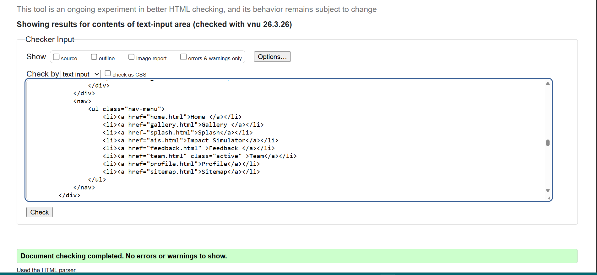
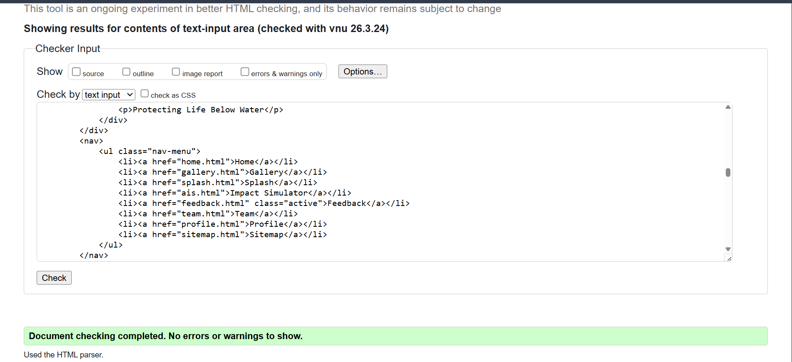
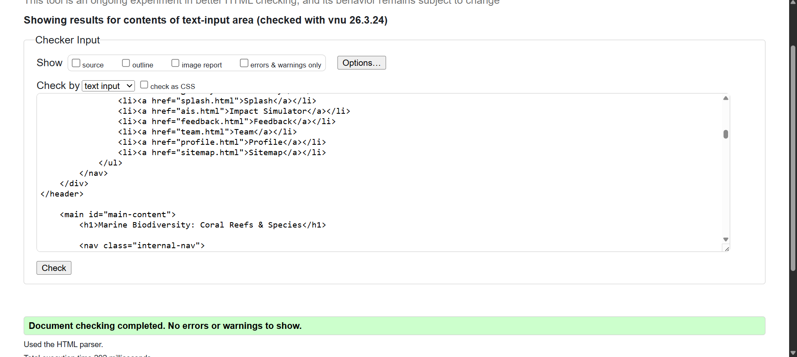

Team Page Validation Report
Validating the Team page with the W3C checker helped catch and resolve a few minor syntax errors, such as correcting image file paths. Achieving a clean, error-free report ensured my HTML and CSS are fully standard-compliant, providing a reliable and accessible experience for all users

Back to Page Editor page
Include a link back to the corresponding section of the Page Editor.
Feedback Page Validation Report
Validating the feedback page with the W3C checker helped catch and resolve a few minor syntax errors, such as correcting image file paths. Achieving a clean, error-free report ensured my HTML and CSS are fully standard-compliant, ensuring the interactive form functions reliably for all users.

Back to Page Editor page
Include a link back to the corresponding section of the Page Editor.
Content Page Validation Report
Validating the Content page with the W3C checker helped catch and resolve a few minor syntax errors, such as correcting image file paths. Achieving a clean, error-free report ensured my HTML and CSS are fully standard-compliant, ensuring the extensive educational content is accessible and perfectly formatted on any device."

Back to Page Editor page
Include a link back to the corresponding section of the Page Editor.